1. Graphic Design & Usability
Set in my first job out of college as a graphic designer, below details how I continually enhanced a form which increased the efficiency of our design team.
The company manufactured security products and printed customer artwork on them. Graphic designers prepared the artwork. A form was attached to every order a designer did. We spent all day in these Adobe Illustrator forms; we knew them well.
This form was equally important to two user groups. Every change to the document needed to please both parties. Coordination was in order.
- The production team needed it to confirm the print was correct.
- And the customer used it as a final-sign-off for their order.
challenge
more work, less workers
During the recession, the graphics department downsized workers and increased orders, sameas many other companies around 2008. We went from 20 orders a day to 50. From 5 graphic designers to 2. Those of us remaining were instructed to innovate for efficiency.
unhappy customers
Before I worked there, proofs were faxed to customers. Some time later, Brady upgraded to PDF proofs via email. The document displayed a swatch of print, specifications the print shop needed and a rough idea of a final print.
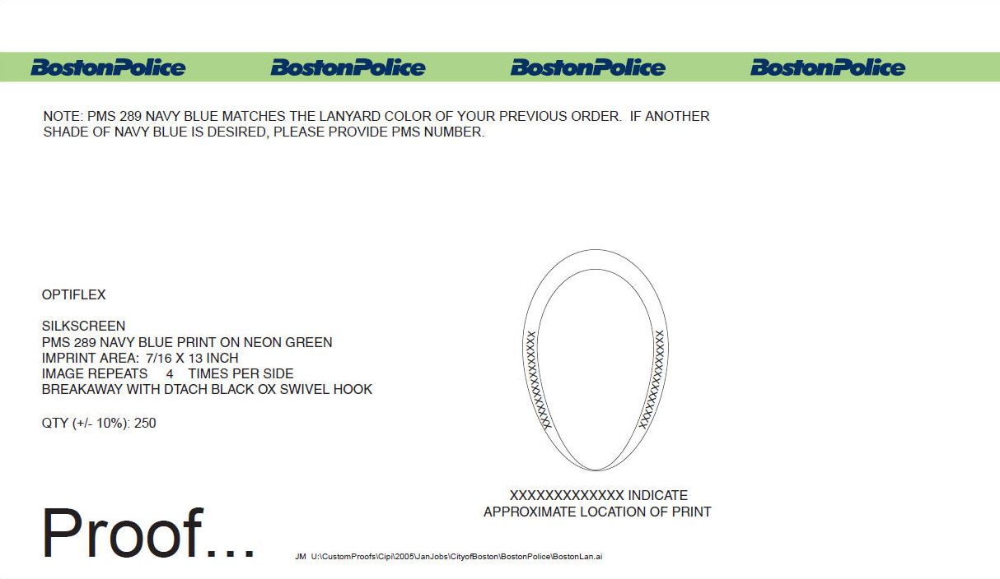Early verion of the proof page.
The roughness occasionally caused unhappy customers. In the image below, you can't tell if the text will be facing inwards or out, and you can't tell how far up the lanyard the imprint will be (without measuring). This left some surprised end users when they received their final product. Printers were blamed and customer service took the job of apologizing.
new printing facility
The company bought a production facility in China, in addition to the one they had stateside, in 2007. That print shop wasn't two cubes down from graphics anymore, so more specifications were needed on the proofs. With the language barrier and time difference, we needed to be super clear to minimize the risk of mistake. That meant, the proofs now had 3 parties to please; local production, overseas production and customers.
process
apply web knowledge to work
During this time, I was freelancing on the side and inhaling everything on usability I could. It made complete sense to use the principals in 'Don't make me think' at work. The design had two main user types. For the customers, I designed for an easy scan. We knew they would not check every detail. They, generally, wanted the colors and print to look right in the 3D sample image. For production, I used the "conventions are your friend" axiom. They was familiar to the way the job-ticket looked, so I designed the proof to match that layout. It would be a simpler side-by-side check.
talk with customers
To understand how the customer was using these proofs, we chose three high ordering ones to discuss their thoughts of trial proofs. I promoted candidness and 'clear reasons why' in their responses. Having received plenty of design feedback from web projects, I understood how important it is to ask for specific feedback. Bad feedback is subjective. Good feedback gets to the core of why they want this font less bold.
testing
The new factory was acquired and the printers needed a proof they would understand, fast. Orders were coming in. I designed different versions and tested them with real jobs. China was able to test our proofs thoroughly, as they received roughly 20 proofs per day. One version had all of the information, but it was too long (two pages total). Another version had different layouts for domestic and overseas production, but that became confusing because some customers received two different looking proofs.
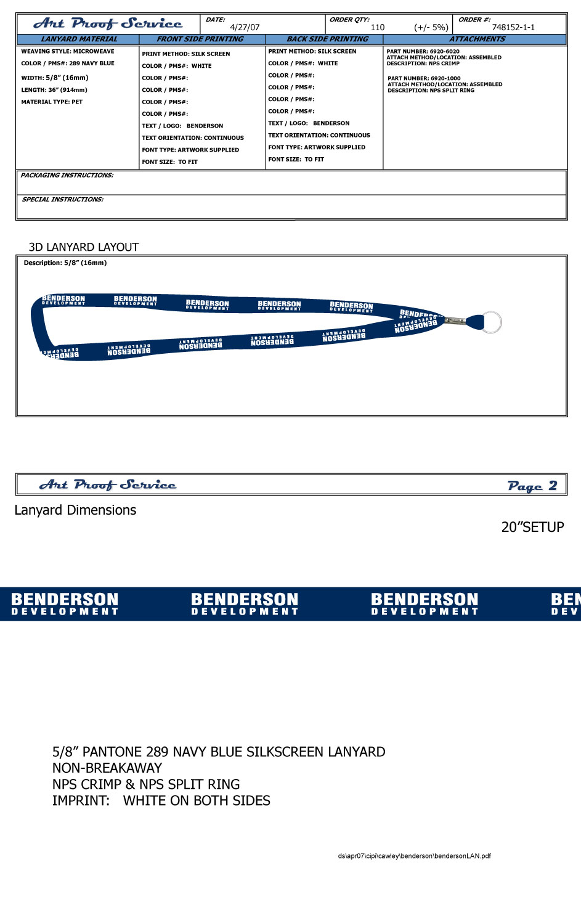This version fit the data China needed and the realistic imagery the customers wanted.
Ultimately, I was part of a small team open to change. We didn't have to wait for approval to impliment. The platform we were testing on was perfect for incremental changes. And the high numbers we were working with meant we would hear feedback fast. A perfect environment for tiny tests. As we promoted rock solid communication, the end users and producers let us know how things worked and what could be better.
solution
Here are the iterations with the final one still used today at the end. We ended up with one sheet, decreased the size of the image and a standardized the angle of the lanyard layout.
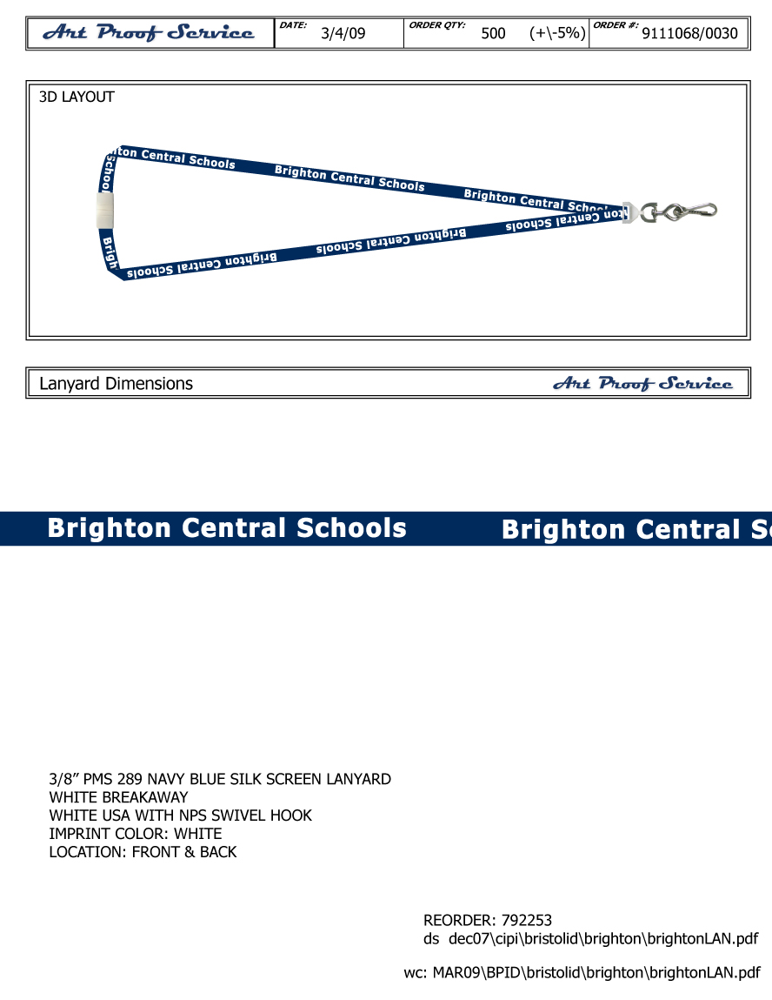A mid-iteration: limited data for production.
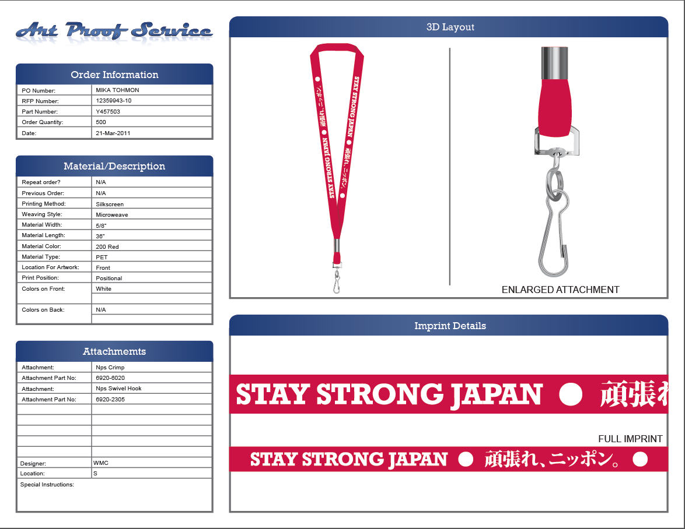Current proof for lanyard: data for production made smaller, imprint art and attachments made larger.
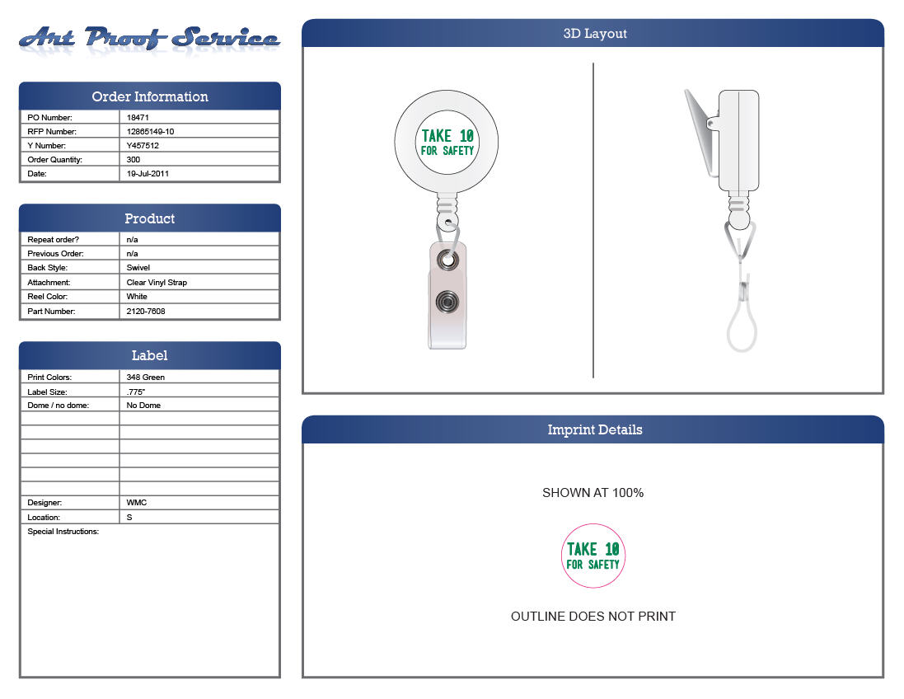Current proof for badge reel: only pertinent data present.
results
The amount of calls we got about products being different than the proof decreased. We decided on one proof for both production facilities, which avoided confusion of keeping them separate. The proof set-up time efficiency increased because the lanyard layout was standardized (note the straight angles of the lanyard). One click (an Illustrator action) could be used to transform straight repeated art into a right and left sided lanyard layout.
2. A Process Design
Adlife Office is the internal start-up of Adlife, a 35 year old ad agency. They opened summer 2013, about a month before I joined.
I worked with clients as a web consultant. Walking non-web folks through the process of getting their site online. Offering custom, affordable, static sites, responsive and SEO ready. I was able to design and develop the front end of dozens of sites. The bigger takeaway was experience of working within a young start-up, building processes, making it up as we went, trying then failing, then trying differently.
read morechallenge
cater to variety
Our tag-line was 'a walk-in ad agency', therefore, unsurprisingly, our clients varied a lot. Folks heard that we offer print and web services and came in asking everything. Some with manila folders of strategy in hand, some lacking the finer details of a business plan, some having no knowledge of a website's role, some interested in a project hugely out of their budget.
meetings
The next step was a consultation. This was the crux of our business; offering folks a chance to talk face-to-face about their website. We were an answer to those jaded from the DIY web services of today. One-by-one, we'd structure a strategy, narrow the content scope, find the websites reason for being and sell. Like other early stage companies, there was no process to follow. It was bushwhacking.
money & contracts
I knew about websites and I could convey that, but the sales end was new to me. There were no other web salespeople in-house and I felt out of my comfort zone. I had some experience selling my design services over the years, but it wasn't as formal. Here, there was a conference table, contracts, dotted lines, the whole bit.
process
classic 'learn as you go' setting
I don't want to say that every meeting was cumulatively better, but working with many different personality types was helpful. Not only for my confidence, but for creating a better conversion road-map. I'd take notes on how the meeting was going during the meeting, write down what to bring to the table next time and talk with the team about how they thought things went.
do
My uncomfortableness was still present. Something was working though. After dozens and dozens of meetings, conversions were going up. Numbers became people. People whose businesses I cared about. As projects progressed, I focused on helping people with their dreams and forgot about being a 'salesperson'.
solution
tiny solutions
There were places in the Adlife Office boat that leaked. Every hole filled in felt like a win for everyone. As much we all wanted to scrap everything, close down for a week and start over, plugging away here and there was working. We started to figure out when to get the client to sign, how to wrap up a meeting, answers to common questions, what info people would want in a printed takeaway, why people seemed confused when they first walked in, etc.
while informing clients, inform colleagues
I was the web department, and through osmoses, the team learned the jargon and web design process. Constantly communicating about little things and implementing as soon as possible lead to everyone learning. As I taught them web, they critiqued my meetings. Their feedback was insanely helpful to me.
I tried to promote a culture of sharing as much as I could. I was the quiet evangelist, preaching google docs and shared calendars.
results
a more sound process
After six months, the process has been tuned and tweaked a lot. Those in the office now feel more confident when someone comes in talking about the web. Some of the effective changes include;
- quick reference for staff or clients: a post card explaining our web services. helpful for the staff and as a giveaway, also promoting our printing
- less time invested in tire-kickers: quickly vetting potential clients before wasting a consultation
- more focused meetings: scheduling meetings with a start and end time help ring in tangents
One example of a process upgrade was convincing more clients to think about content first. This idea is well known in our industry. First decide what the site will say, then design and develop around that. This helps us all control urge to jump to pictures, fonts, colors.
The solution was educating clients about content better. After failed attempts at explaining, I experimented bringing a blank content outline to the first meeting; displaying emptiness like an assignment. It emphasized the difference between what I will do and what they will do. People understood with the visuals. It bolstered using voice to portray my points. I was amazed how well that worked.
The second line of defense, if folks were slow to write content, was to show the dashingly designed site, blank, dying for content.
happy clients
The mindset adjustment from sales numbers to people was important for me. It removed weight. I am proud to have helped with many Rhode Island small businesses and entrepreneurs.
Here are three deliverables a design process:
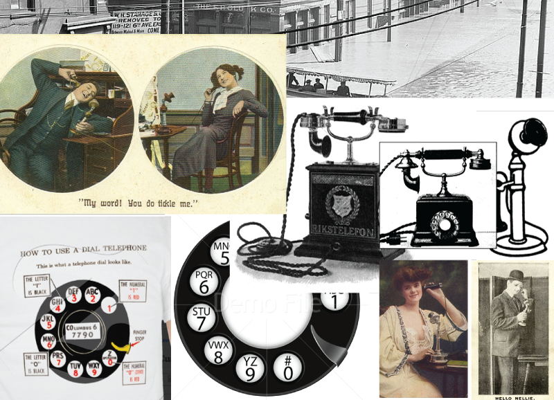brainstorming imagery
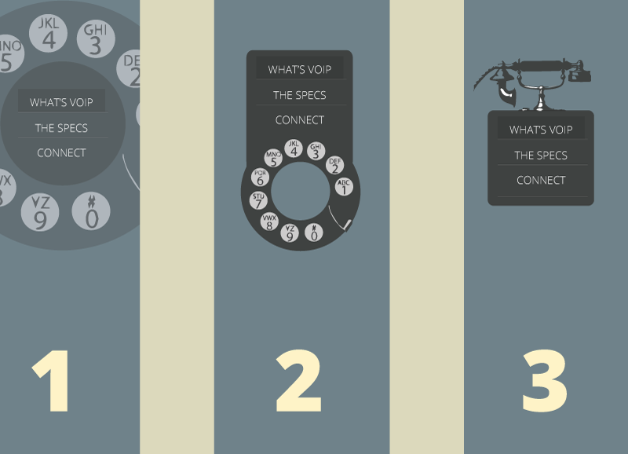focused proofs
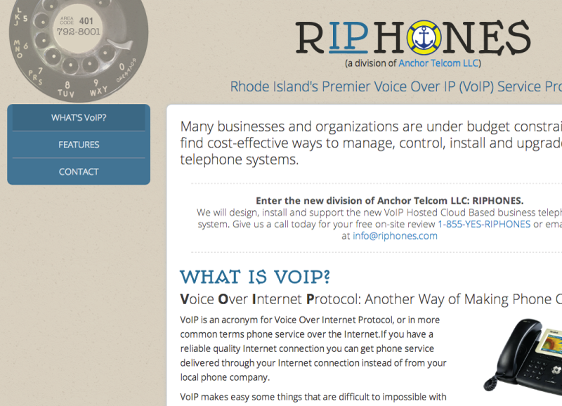interactive prototypes
Here are six final sites:


3. A Redesign
The process behind a redesign and the persistence needed to follow-through when teams change.
The School of Grove (SoG) is a non-profit, private music school that started in 2007. They have a nice facility, covered inside and out with custom murals, in popular Inman Square, Cambridge, MA. They reached a level where they had staff handling their social media and their once suitable website was falling behind on design trends and features. As it wasn't my strong suit, I planned to rely on twitter and stackoverflow for any dev question beyond me.
read morechallenge
our team
Our team was a duo, consisting of a php developer and myself, and we were states away, so face-to-face meetings were difficult. We communicated with email, video chats and cloud sharing. Mid-way through, my developer got a new position. We agreed that he could no longer take on his roles and that I would complete the remaining development.
their team
The SoG team was local to me and consisted of the CEO, Marketing Manager, School Administrator and mural/logo designer. Everyone was cc'ed on emails and things often got into design-by-committee situations. Each person had their own vision.
rebrand
The site was originally built using a custom theme on WordPress and it contained a couple of years of content. A redesign meant reorganization; what legacy data should remain, what sections should be emphasized, what the call-to-actions should be, etc. These questions prompt underlying questions about the business and it's identity. It was a perfect time to readdress who SoG was and who their target was.
process
collaboration
I sussed through the old content using spreadsheets for management. See the gdoc (the versions of iterations are on tabs at the bottom). Working from shared documents was great because it allowed SoG move through the content auditing process without being distracted by the old site, and without emails.
phases
My developer and I processed the needs and brainstormed, starting with the initial proposal spec, which encompassed the redesign plan. There were three main phases; design, front-end, back-end, two parts per phase.
Here are some screenshots from the design phase:
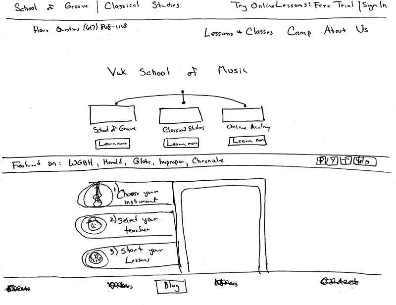initial hand sketches
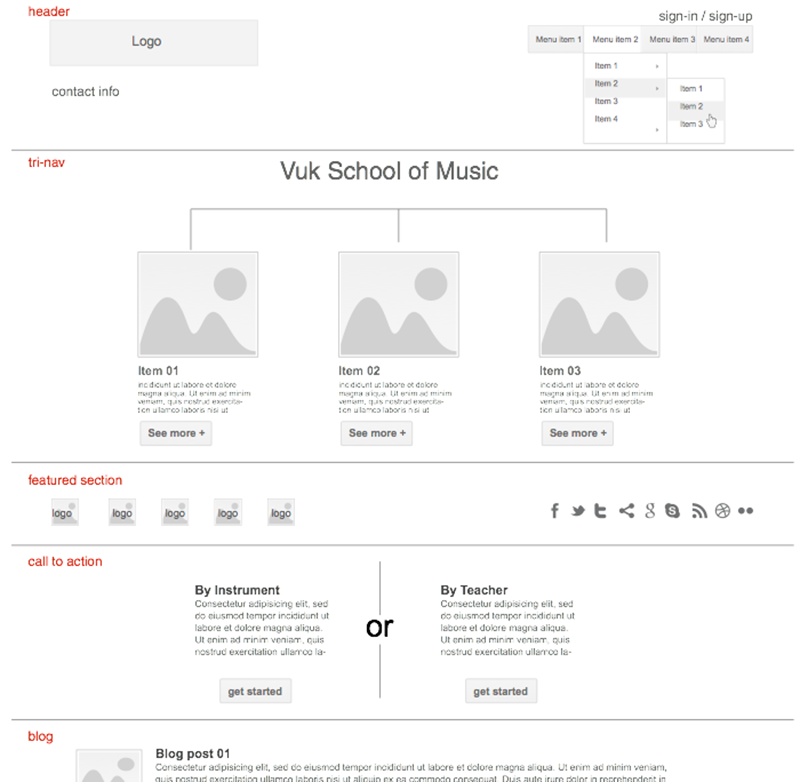early wireframe
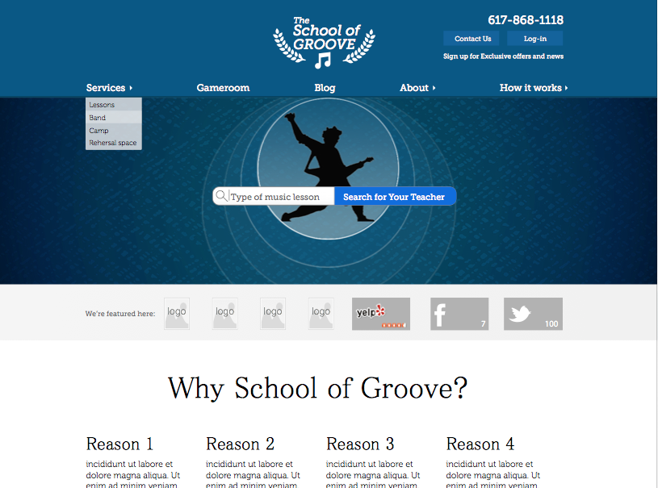later wireframe
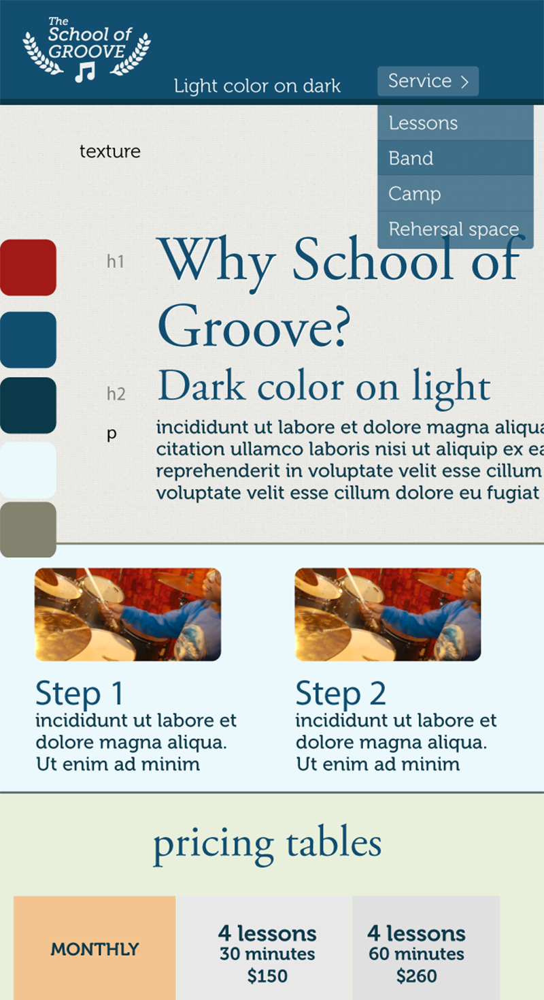atmosphere
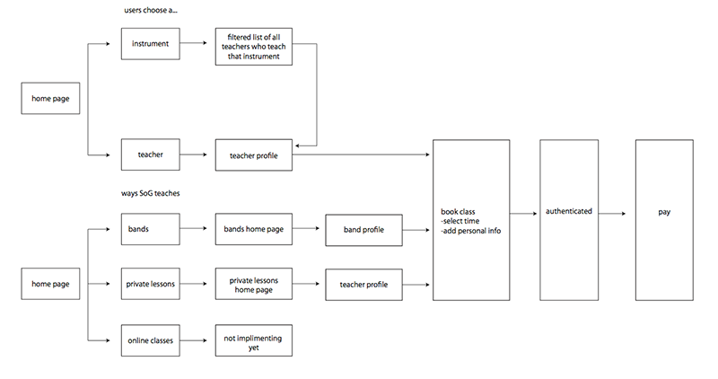user flow
solution
familiar framework
We built on a new custom theme WordPress using twitter bootstrap. It was a framework we knew and thus, lead to efficient iterations.
single point of contact
This initial problem was my fault. It could have been avoided had we structured the system clearly from the outset: one point of contact for each party. This solution's benefits were two-fold; it saved the developer from being bogged down by emails and it cured the 'design by committee'. Each team agreed, confided in their contact person, then communicated.
iterative
Once the main wireframes and atmosphere were approved, the biggest launch we had, everything else was pushed out one-by-one. Each element had focus when implemented. Bugs wouldn't be hidden by distraction.
Working in small sprints was fitting for the last leg of development for me. I would spend time getting the hang of a new system, deploy it, then move to the next.
Here is a rough list of iterations after the main site launch;
- pricing table
- blog
- email sign-up form
- instructors archive
- quick search on homepage
- scheduling integration
- payment integration
results
The client ended up with a site that better reflected their identity. The murals inside matched the site, prospective students can now schedule lessons, pay and check teachers availability online.
Personally, it was a super valuable lesson in management and development.